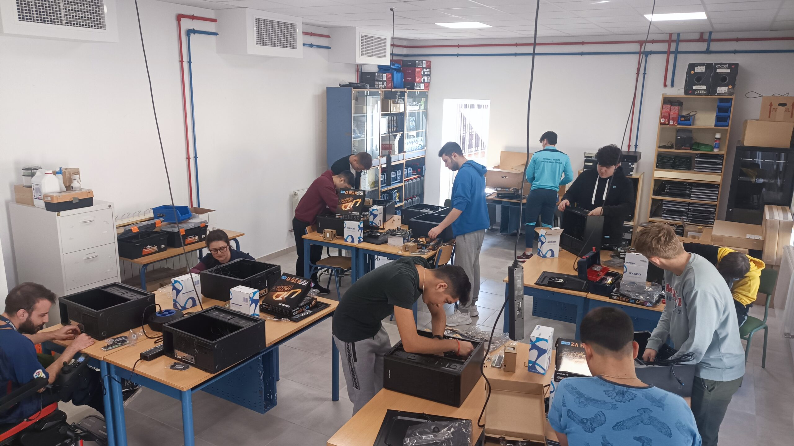

Nuestra atención al cliente es de alta calidad ya que nuestro
personal está altamente cualificado para poder ofrecer una
experiencia duradera y fiable
Recuperación de información
Nos encargamos de recuperar toda información que haya quedado
perdida o corrupta siendo que tenemos muchos medios por los
cuales podemos recuperar esos datos
Formación de calidad

Nosotros ofrecemos a los alumnos que vengan a practicas reciban
una educación y experiencia laboral para que en un futuro pueda
llegar a trabajar o incluse crear una empresa